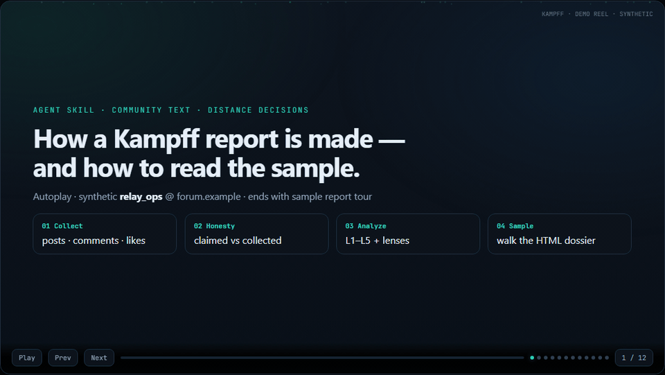

Agent skill · spectrograph L1–L5
Kampff turns published text into a distance decision —
engage · neutral · caution · avoid —
with evidence quotes. Works with Grok · Claude · Hermes.
sickn33 profiles customers. i-am profiles you.
Kampff profiles everyone on the board — including you.
Collection stays separate. The skill reads a normalized bundle — see usage · spectrograph · input schema.

| Asset | Open |
|---|---|
| Sample HTML dossier | sample-community-report.html |
| Interactive walkthrough | demo-kampff-walkthrough.html |
| Demo video | demo-reel.mp4 |
| Full docs table | docs index (usage, lenses, collectors…) |
git clone https://github.com/YangKangSung/kampff-skills.git # drop kampff/ into your agent skills path (Hermes / Claude / Grok)